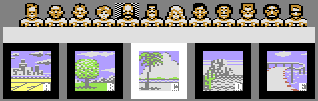
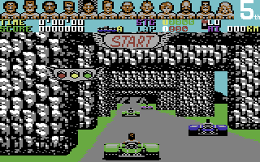
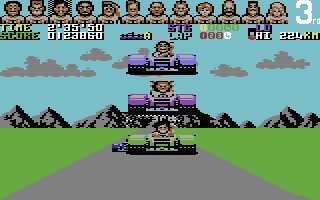

<meta charset="utf-8">
<meta name="viewport" content="width=device-width, initial-scale=1">
<title>Power Drift</title>
<link rel="preconnect" href="https://fonts.googleapis.com">
<link rel="stylesheet" href="https://fonts.googleapis.com/css2?family=Lato:wght@400;700;900&family=IBM+Plex+Mono:wght@400;500&display=swap">
<style>
:root{
  --bg:#23262d; --paper:#e9e7e1; --surface:#ffffff; --surface-2:#f1efea; --line:#d5d3cc; --line-soft:#e0ded8;
  --ink:#2f3136; --ink-soft:#55585f; --ink-mute:#80838a;
  --link:#1f5fa8; --link-hover:#154480; --accent:#1f5fa8;
  --amber:#c25a00; --cyan:#1f5fa8; --coral:#d04a3a; --green:#2a8a4a; --violet:#4a5bd6; --hl:#fff0c2;
  --chip:#2f3136; --chip-ink:#ffffff;
  --c64blue:#40318d; --c64grey:#686868;
  --fd:'Lato',system-ui,sans-serif; --fb:'Lato',system-ui,sans-serif; --fm:'IBM Plex Mono',ui-monospace,Menlo,monospace;
  --col:1080px; --gx:68px; --fs:17px; --lh:1.6; --hw:900; --h1:46px; --h2:26px; --sy:48px; --pp:26px; --r:10px;
  --plate-shadow:0 1px 2px rgba(0,0,0,.05),0 4px 14px rgba(0,0,0,.05);
}
*{box-sizing:border-box}
html{background:var(--bg);min-height:100%}
body{background:var(--paper);color:var(--ink);font-family:var(--fb);font-size:var(--fs);line-height:var(--lh);max-width:var(--col);margin:0 auto;min-height:100vh;padding:0 0 4rem}
h1,h2,h3{font-weight:var(--hw);letter-spacing:-.01em;text-wrap:balance;color:var(--ink);margin:0}
.wrap{padding:0 var(--gx)}
.hero{padding:48px var(--gx) 8px;text-align:left}
.eyebrow{font-family:var(--fm);font-size:12px;letter-spacing:.08em;text-transform:uppercase;color:var(--ink-mute);margin:0 0 10px}
.hero h1{font-size:var(--h1);line-height:1.15;letter-spacing:-.02em;margin:0 0 14px}
.hero .sub{margin:0 0 .6em;color:var(--ink-soft)}
section{padding:var(--sy) 0 24px}
section:last-of-type{border-bottom:none}
.fig{font-family:var(--fm);font-size:12px;letter-spacing:.08em;text-transform:uppercase;color:var(--ink-mute);margin:0 0 10px}
h2.t{font-size:var(--h2);margin-bottom:12px}
h3{font-size:19px;margin:26px 0 8px}
.lede{color:var(--ink-soft);margin:0 0 30px}
.plate{background:var(--surface);border:1px solid var(--line);border-radius:var(--r);padding:var(--pp);box-shadow:var(--plate-shadow)}
.cap{font-size:14px;color:var(--ink-mute);margin-top:14px;line-height:1.55}
.cap b{color:var(--ink);font-weight:700}
code{font-family:var(--fm);font-size:.82em;background:var(--chip);color:var(--chip-ink);border-radius:4px;padding:2px 6px;overflow-wrap:break-word;-webkit-box-decoration-break:clone;box-decoration-break:clone}
.pd-shots{display:grid;grid-template-columns:repeat(auto-fit,minmax(240px,1fr));gap:12px}
.pd-shots figure{margin:0}
.pd-shots img{display:block;width:100%;height:auto;image-rendering:pixelated;border-radius:4px}
.pd-shots figcaption{font-size:13px;color:var(--ink-mute);margin-top:6px}
.pd-cv{display:block;width:100%;height:auto;image-rendering:pixelated;background:#000;border-radius:4px}
.pd-bar{display:flex;gap:8px;flex-wrap:wrap;align-items:center;margin:0 0 14px}
.pd-btn{font-family:var(--fm);font-size:13px;background:var(--surface-2);border:1px solid var(--line);border-radius:6px;padding:6px 11px;cursor:pointer;color:var(--ink)}
.pd-btn[aria-pressed="true"]{background:var(--chip);color:var(--chip-ink);border-color:var(--chip)}
.pd-sel{font-family:var(--fm);font-size:13px;padding:5px 8px;border:1px solid var(--line);border-radius:6px;background:var(--surface)}
.pd-bar label{font-family:var(--fm);font-size:13px;color:var(--ink-soft);display:flex;gap:8px;align-items:center}
.pd-bar input[type=range]{width:200px;max-width:50vw}
.pd-out{font-family:var(--fm);font-size:13px;color:var(--ink-soft)}
.pd-tab{border-collapse:collapse;width:100%;font-size:14px;margin-top:14px}
.pd-tab th,.pd-tab td{border-bottom:1px solid var(--line-soft);padding:6px 8px;text-align:left;vertical-align:top}
.pd-tab th{font-family:var(--fm);font-size:12px;letter-spacing:.06em;text-transform:uppercase;color:var(--ink-mute);font-weight:500}
.pd-tab td.n{font-family:var(--fm);text-align:right}
.pd-tab th.n{text-align:right}
.pd-scroll{overflow-x:auto}
@media (max-width:760px){:root{--gx:20px;--h1:34px;--pp:16px}}
</style>
<!-- tabs -->
<header class="hero">
  <p class="eyebrow">1989 · Activision</p>
  <h1>Power Drift</h1>
  <p class="sub">A twelve-kart race over a track that climbs and falls like a roller coaster, drawn in text characters on a Commodore 64. Every hill, jump and bend is a short routine that changes how the road is drawn, row by row.</p>
</header>
<main class="wrap">

<section id="game">
  <p class="fig">01 · The game</p>
  <h2 class="t">Four laps, and a place in the first three to go on</h2>
  <p class="lede">The player picks one of twelve drivers and one of five courses, A to E, each of five stages. A stage is a race of four laps against the eleven other drivers.</p>
  <div class="pd-shots">
    <figure><figcaption>The select screen. A cursor runs along the twelve faces on its own, the stick moves the highlight between the five courses, and fire picks both.</figcaption></figure>
    <figure><figcaption>The start of the first race of course A. The panel along the top shows the twelve faces in race order, the time, the score, the stage, the lap and the speed.</figcaption></figure>
  </div>
  <p>The track climbs, drops, banks into bends and jumps gaps. A kart that leaves the road on a raised stretch falls off and is dropped back onto the track, which costs time; one that hits the roadside scenery or runs into a slower kart spins out. Each race has three places on the podium. A player who takes one goes on to the next stage, and once rivals have taken all three, the game is over.</p>
  <p>Power Drift was Sega's arcade game of 1988. Chris Butler wrote this version for Activision in 1989; the copyright line on the select screen names Activision, Sega and him, and that is the only credit the program holds.</p>
</section>

<section id="music">
  <p class="fig">02 · Music</p>
  <h2 class="t">Music: the game's own driver plays both tunes</h2>
  <p class="lede">The game holds two tunes. The race tune plays through every stage, and the other plays while a high score's name is entered.</p>
  <div class="plate"><div id="pd-sid"></div>
  <p class="cap">The game's own sound driver runs on the site's model of the 6502 processor, from the listing's bytes. A button starts a tune as the game does, with the tune's number in <code>$B804</code> and a call to <code>sound_reset</code> (<code>$B80A</code>), then calls <code>sound_play</code> (<code>$B800</code>) once a frame, as the race's interrupt does. <code>test_music.js</code> runs the game's own code beside it on the kit's simulator and checks every write to the sound chip, frame by frame, for 3,000 frames of each tune. The bass of the name-entry tune, on the second voice, stays between 46 and 220 Hz, and the race tune's goes down to 82 Hz: laptop and phone speakers barely play notes that low.</p></div>
  <p>Numbers written with a $ are addresses in the computer's memory, in hexadecimal; each one links to the game's code on the Source code tab. The driver plays the SID sound chip's three voices. Each voice reads an order list, a list of patterns to play in turn (<code>tune_table</code>, <code>$C4BA</code>). A pattern is a run of notes, each a note number and a length, and of commands, each <code>$FE</code> and a number: change the instrument, slide the pitch, add vibrato, sweep the pulse width (which changes the tone's colour), or end the pattern (<code>command_table</code>, <code>$BBFB</code>). An instrument is a short list of waveforms, stepped once a frame (<code>wave_tables</code>, <code>$C241</code>). The chip's filter is never used.</p>
  <p>The select screen is silent. Its interrupts never call the driver; only the race's interrupt (<code>$5253</code>) and the text screens' (<code>$5181</code>) do.</p>
</section>

<section id="effects">
  <p class="fig">03 · Sound effects</p>
  <h2 class="t">Sound: four effects, two of them never heard</h2>
  <p class="lede">The driver stores four sound effects and plays them on the third voice. The game starts only two.</p>
  <div class="plate"><div id="pd-sfx"></div>
  <p class="cap">The same driver as the music, from the listing's bytes. A button leaves the driver as the game does before the select screen, with the music off, and writes the effect's number to <code>sound_effect</code> (<code>$B805</code>), as the game does. <code>test_music.js</code> checks these buttons against the game's own code as it checks the tunes. The spin's effect repeats its last note until <code>kart_spin</code> ends it as the spin stops, so here it plays until it is stopped.</p></div>
  <p>The game writes <code>$B805</code> in three places: 2 when the player's place changes (<code>update_place</code>) or a rival comes alongside (<code>rival_near</code>), and 3 when the kart spins (<code>kart_spin</code>). Effect 1 has no writer at all. Effect 4 is a steady tone with a sweeping pulse, which starts itself again whenever it ends; it sounds like an engine. Only starting effect 4 sets the flag at <code>$B808</code> that keeps it going, and only a routine nothing calls clears it (<code>sound_engine_off</code>). So the game carries an engine sound it never plays.</p>
</section>

<section id="frame">
  <p class="fig">04 · One frame</p>
  <h2 class="t">One frame of a race, drawn from memory</h2>
  <p class="lede">The race screen is two screens in one: a panel of five text rows at the top, and the view under it.</p>
  <div class="plate">
    <div class="pd-bar" id="pd-frame-bar">
      <button class="pd-btn" type="button" data-f="flat" aria-pressed="true">Flat road</button>
      <button class="pd-btn" type="button" data-f="hill" aria-pressed="false">Raised track</button>
    </div>
    <canvas class="pd-cv" id="pd-frame" width="384" height="272"></canvas>
    <p class="cap">Both pictures are drawn on this page by the site's model of the C64's video chip, from a record of one whole frame in the emulator: memory as the frame began, and every write to the video chip during it, with the line it came on. In both, every pixel matches the emulator's own picture of the frame. <b>Flat road</b>: course B, stage 1, five seconds in, with poplars along the road. <b>Raised track</b>: the same stage later, at 119 km/h, on a stretch built high above the ground.</p>
  </div>
  <p>The panel is rows 0 to 4 of a text screen at <code>$E000</code>, drawn with its own character set, the shapes of 256 characters, at <code>$F000</code>. At line <code>$5A</code> of the picture an interrupt, a routine the video chip calls when it reaches a set line, points the chip at the view's screen and at the race's character set at <code>$F800</code> (<code>race_irq_view</code>). The sky and the ground are one background colour that a timer changes partway down the screen (<code>irq_handler</code>), and the track's hills move the line where it changes. The karts are sprites, the C64's movable pictures, which lie over the characters.</p>
  <p>The view is drawn into one of two screens while the other is shown, and the two swap when a picture is done (<code>race_frame_loop</code>). A whole picture takes about three video frames, so the race moves about 17 times a second.</p>
</section>

<section id="view">
  <p class="fig">05 · The view</p>
  <h2 class="t">The roadside is cut out of a sheet of characters</h2>
  <p class="lede">The view is a screen of text characters. Each object beside the road is a block of them, with a picture of its own for each of 16 distances.</p>
  <div class="plate">
    <div class="pd-bar">
      <label>Object <select class="pd-sel" id="pd-type"></select></label>
      <label>Distance <input type="range" id="pd-dist" min="0" max="15" value="4"></label>
      <span class="pd-out" id="pd-dist-out"></span>
    </div>
    <canvas class="pd-cv" id="pd-scen" width="320" height="160"></canvas>
    <p class="cap">Each picture is drawn here from the game's own tables. <code>scenery_pictures</code> (<code>$3E0B</code>) gives each of the 24 kinds of object 16 records of four bytes: a width and a height in characters, and where the top-left character sits in the tile sheet (<code>$6E00</code>-<code>$B7F5</code>), whose rows are 256 bytes apart. The character shapes are the race set's, with the block of 175 characters the stage loads before the object first appears, and the colour is the object's own (<code>scenery_colours</code>). A character 0 is left out, as the game's copying routine leaves it out. The colours are those of course B, stage 1.</p>
  </div>
  <p>Each picture of the view is built in the same order. <code>clear_view</code> fills the screen with the sky character. <code>draw_horizon_rows</code> copies in the stage's two horizon pictures, 40 characters of each from a picture 80 wide, starting at a column that moves one place for each step of a bend, so the skyline turns as the road does. <code>draw_road</code> draws the road a row at a time from the bottom up. Last, <code>draw_scenery</code> draws the objects, far ones first so that near ones cover them. Every object is copied out of the tile sheet by one routine, <code>draw_tiles</code>, which leaves out the empty character 0, so an object's shape is cut round its outline.</p>
  <p>The scenery moves in four slots, each holding up to three objects: one left of the road, one over it and one right of it. A slot starts at distance 15, the farthest, and comes one step nearer with each step along the track (<code>scenery_tick</code>). When it passes the kart, it takes the next record of the stage's scenery list (<code>scenery_list_next</code>). The list can also name a block of 175 character shapes, which is copied into the race set when the list reaches it (<code>chars_5820</code> and three more), so a stage can change from one kind of roadside to another partway round.</p>
  <p>At distance 0 the objects are level with the kart, and drawing them is also the test for a crash (<code>draw_scenery</code>). An object on the right that covers column 21 spins the kart out, and so does one on the left that starts left of column 18 while the kart is off the left side of the road.</p>
</section>

<section id="road">
  <p class="fig">06 · The road</p>
  <h2 class="t">Every hill is a list of road widths</h2>
  <p class="lede">The road is drawn from the bottom of the screen up, one character row at a time. A list gives each row's width, and a hill is a different list for every step.</p>
  <div class="plate">
    <canvas class="pd-cv" id="pd-road" width="320" height="80"></canvas>
    <p class="cap">The flat road, drawn from <code>road_flat_widths</code> (<code>$462F</code>): nine rows of 34, 30, 26 and so on down to 2 characters, then 0 to end the list. The road's middle is shifted on each row by the bend and by where the kart is across the road, and the edges are drawn by ten small routines, chosen by how far the edge has moved since the row below (<code>road_left_edge</code>, <code>road_right_edge</code>).</p>
  </div>
  <p>A stage's track is a list of pieces (<code>track_a1</code> and the 24 lists after it), each the address of a short routine that runs for a number of steps. A step is a fixed distance along the track, and a lap is about 400 of them. A straight runs for 4 or 16 steps and changes nothing. A bend takes 10 steps, moving the bend one notch a step towards the left or the right; a bend is nine notches either way, so it takes one piece to turn into a bend and another to come out of it. A climb, a crest and a descent point the road's three lists, of widths, of the rows the scenery stands on and of the heights of the karts, at a new set on each step, and move the horizon. A crest can hide rows of the road: a width of <code>$80</code> marks a row behind the brow of the hill.</p>
  <p>A climb also raises the track. From its twelfth step a count at <code>$53D4</code> goes up one a step, and while it is above 0 a kart that leaves the road falls off. The kart is lifted back onto the track from the top of the screen, at 70 km/h (<code>drop_kart_back</code>). A jump is a crest with a gap in the road: from its 7th step to its 21st the kart is in the air, and a kart slower than speed level 10 on any of those steps falls (<code>piece_jump</code>). The <a href="levels.html">Maps / levels</a> tab draws every stage's pieces.</p>
</section>

<section id="karts">
  <p class="fig">07 · The karts</p>
  <h2 class="t">Eleven rivals share four sprites</h2>
  <p class="lede">The C64 shows eight sprites at once. The player's kart takes four of them, and the other eleven karts take turns with the remaining four.</p>
  <div class="plate">
    <div class="pd-bar">
      <label>Distance <input type="range" id="pd-rd" min="0" max="31" value="3"></label>
      <span class="pd-out" id="pd-rd-out"></span>
    </div>
    <canvas class="pd-cv" id="pd-rival" width="320" height="140"></canvas>
    <p class="cap">A rival at each of its 32 distances, drawn as the game builds it in <code>place_rivals</code>: the first sprite from <code>rival_pictures</code> (<code>$3B43</code>), and the others the routine for that distance adds (<code>rival_picture_routines</code>), 24 pixels apart and the head 21 lines above. The height on the screen is the flat road's, from <code>road_flat_kart_heights</code> (<code>$4649</code>). Distance 0 and 1 use the player's own kart pictures and the driver's own head from behind; here the head is the first driver's.</p>
  </div>
  <p>The player's kart is a head and three body sprites, set once a frame by a timer interrupt (<code>sprite_band_irq</code>). The rivals are up to twelve records of a position, a picture and a colour, built each race frame by <code>place_rivals</code>, sorted from the top of the screen down (<code>sort_karts</code>) and copied where the interrupts read them (<code>copy_kart_sprites</code>). Down the screen, an interrupt (<code>kart_mux_irq</code>) puts the next record into the next of sprites 4 to 7 just after the one before has been drawn, so one sprite can show several karts in one frame.</p>
  <p>A near rival takes four records: three for the kart and one for the head. Up to distance 11 a rival takes two, and from 12 on, one. A rival at distance 1 in front of the kart, and slower than it, spins the player out (<code>place_rivals</code>). The rivals keep their order of speed: rival 0 tops out at speed level 30 and rival 10 at 12 (<code>rival_top_speeds</code>). The player's kart reaches 32 in high gear, the fastest on the track.</p>
</section>

<section id="speed">
  <p class="fig">08 · Speed and time</p>
  <h2 class="t">Speed levels of 7 km/h</h2>
  <p class="lede">Up on the stick adds a speed level every other race frame. The read-out adds 7 km/h for each level.</p>
  <div class="plate">
    <table class="pd-tab">
      <tr><th>Gear</th><th>Top level</th><th>Top speed</th><th>How it gains</th></tr>
      <tr><td>Low</td><td class="n">18</td><td class="n">126 km/h</td><td>a level every other race frame</td></tr>
      <tr><td>High</td><td class="n">32</td><td class="n">224 km/h</td><td>a level one race frame in four below level 14, then every other</td></tr>
    </table>
    <p class="cap">From <code>move_player</code> and <code>speed_up</code>. Seen in the emulator: level 18 read 126 km/h, level 17 119 and level 10 70.</p>
  </div>
  <p>Fire changes gear, once a press (<code>gear_change</code>). With neither up nor down held the kart slows a level every other race frame, and twice as fast with down held. Off the road, above level 3, it slows whatever the stick says. Each race frame adds a quarter of the speed level to the score (<code>add_speed_score</code>), so a fast lap scores more than a slow one.</p>
  <p>The clock counts race frames, not time. A digit after the seconds goes up every other race frame and runs from 0 to 5, so a second on the clock is 12 race frames (<code>race_clock</code>). The race makes about 17 race frames a second, so the clock gains on real time; <a href="discoveries.html#clock">the Discoveries tab</a> has the figures. At the end of a stage won, the seconds on the clock decide a time bonus, which the game <a href="discoveries.html#bonus">counts out in the wrong number system</a>.</p>
</section>

<section id="places">
  <p class="fig">09 · Places</p>
  <h2 class="t">Three places on the podium, and the game ends when they are gone</h2>
  <p class="lede">Each race has three places on the podium. Once rivals have taken all three, the game is over, wherever the player is.</p>
  <div class="plate pd-shots"><figure><figcaption>The player has finished third. The three finishers stand one above another over the road, the first at the top, each with its driver's face from the front.</figcaption></figure></div>
  <p>Each race frame <code>update_place</code> works out the player's place from the rivals' laps and positions. The rivals keep their order of speed, so it only has to look from the slowest up for the first rival ahead. A change of place starts a sound and swaps the player's face along the row of faces on the panel (<code>show_place</code>).</p>
  <p>Every kart that finishes its fourth lap takes the next of three places on the podium (<code>place_finisher</code>): its kart and its driver's face appear over the road, with the place written across the top of the face. When the third place goes to a rival, the game is over (<code>game_over</code>). When the player takes a place, the stage is won (<code>stage_won</code>), and after the fifth stage of a course the screen says CONGRATULATIONS (<code>course_complete</code>).</p>
  <p>When the player finishes, the slowest rival, rival 10, is given the player's lane, speed and colour, and the player's own sprites are pointed at an empty picture (<code>move_on</code>). So the kart seems to drive on up the road while the view stays where it is.</p>
</section>

</main>
<footer style="margin:16px 0 0;padding:22px var(--gx) 0;border-top:1px solid #e0ded8;font-family:'IBM Plex Mono',ui-monospace,Menlo,monospace;font-size:12px;color:#80838a"><a href="https://github.com/gamesexplained/gamesexplained" style="color:#1f5fa8;text-decoration:none">GitHub</a> · <a href="https://discord.gg/3V9GWyRDWV" style="color:#1f5fa8;text-decoration:none">Discord</a><br>© Games Explained contributors. Write-ups, facts and symbol maps are available under <a href="https://creativecommons.org/licenses/by-sa/4.0/" style="color:#1f5fa8;text-decoration:none">CC BY-SA 4.0</a>; code under <a href="https://opensource.org/licenses/MIT" style="color:#1f5fa8;text-decoration:none">MIT</a></footer>
<script src="../../lib/c64.js"></script>
<script src="../../lib/cpu6502.js"></script>
<script src="../../lib/sid.js"></script>
<script>
/* pd-music */
// createDriver for C64Sid: runs the game's own sound driver, its code and tables taken from the
// listing over PD_DRIVER_RANGES, on the kit's 6502 (C64Cpu, from ../../lib/cpu6502.js, which sid.js
// passes to createDriver). A tune's button starts it as game_start and name_entry do: the music on
// ($B806 = 0), the tune's number in $B804 and sound_reset ($B80A). An effect's button leaves the
// driver as game_start does before the select screen, sound_reset and then the music off
// ($B806 = 1), and writes the effect's number to $B805, as update_place and kart_spin do. Then
// sound_play ($B800) once a frame, as the race's top-of-screen interrupt calls it. The driver
// reads the raster line ($D012) and, in effect 1, CIA 1's port B ($DC01), and throws both values
// away: the reads answer 0 and $FF. Its writes of 0 to $D419-$D41B, registers the chip only reads,
// are left out. A tune never ends; an effect ends when none is playing or waiting ($C0BB and
// $B805 both 0). Effect 3 repeats its last note until kart_spin ends it, and effect 4 starts itself
// again for ever, so those two play until their button is pressed again.
const PD_DRIVER_RANGES = [[0x00F4, 0x00FF], [0xB800, 0xCFFF]];
const PD_TUNES = [{ name: 'The race', tune: 2 }, { name: 'The name entry', tune: 1 }];
const PD_EFFECTS = [{ name: 'Effect 1, never played', sfx: 1 }, { name: 'A place changes, or a rival alongside (2)', sfx: 2 },
  { name: 'A spin (3)', sfx: 3 }, { name: 'Effect 4, an engine, never played', sfx: 4 }];
function createDriver(D, C64Cpu) {
  const base = new Uint8Array(0x10000);
  for (const [ad, bytes] of D.mem) base.set(bytes, ad);
  const sid = new Uint8Array(25);
  let m, cpu, c, writes = [], over = false;
  const io = {
    read(ad) {
      if (ad === 0xD012) return 0;
      if (ad === 0xDC01) return 0xFF;
      throw new Error('read $' + ad.toString(16));
    },
    write(ad, val) {
      if (ad >= 0xD400 && ad < 0xD419) { sid[ad - 0xD400] = val; writes.push(ad - 0xD400, val); return; }
      if (ad >= 0xD419 && ad < 0xD41C) return;
      throw new Error('write $' + ad.toString(16));
    },
  };
  const run = (ad) => cpu.call(ad, {}, { maxSteps: 100000 });
  return {
    sid,
    get writes() { return writes; },
    get mem() { return m; },
    init(t) {
      c = D.list[t];
      m = base.slice(); cpu = new C64Cpu.CPU(m, { port: 0x35, io });
      sid.fill(0); over = false; writes = [];
      if (c.tune) { m[0xB806] = 0; m[0xB804] = c.tune; run(0xB80A); }
      else { run(0xB80A); m[0xB806] = 1; m[0xB805] = c.sfx; }
    },
    stop() { over = true; writes = []; },
    play() {
      writes = [];
      if (over) return;
      run(0xB800);
      if (c.sfx && !m[0xC0BB] && !m[0xB805]) over = true;
    },
    playing() { return !over; },
  };
}
// end of pd-music
</script>
<script>
// Two whole frames recorded in the emulator (kit/c64/frame.py capture, then trim): course B,
// stage 1, on the flat and on a raised stretch.
const PD_FRAMES = { flat: {"schema":1,"standard":"PAL","lines":312,"cycles":63,"about":"","vic":[174,206,150,227,174,227,198,227,8,201,32,201,176,163,70,10,176,27,0,0,0,255,216,0,191,241,241,240,255,0,255,255,240,245,252,240,243,240,255,248,242,242,242,245,245,246,245],"cia2":[196,63],"cpu":[47,53],"writes":[[1,21,53281,246,6],[1,27,53282,255,15],[1,33,53283,248,8],[1,39,53272,141,140],[2,56,53262,240,240],[3,6,53264,48,48],[3,12,53263,46,46],[75,10,53283,240,0],[90,62,53272,191,190],[91,7,53282,252,12],[92,26,53263,10,10],[92,37,53262,0,0],[92,54,60415,208,208],[92,59,61439,208,208],[93,5,53294,249,233],[93,41,53261,10,10],[93,52,53260,152,152],[94,6,60414,122,122],[94,11,61438,122,122],[94,20,53293,248,56],[94,56,53259,10,10],[95,4,53258,0,0],[95,21,60413,163,163],[95,26,61437,163,163],[95,35,53292,240,240],[96,8,53257,10,10],[96,19,53256,6,6],[96,36,60412,230,230],[96,41,61436,230,230],[96,50,53291,255,239],[97,26,53264,0,0],[98,17,53256,178,178],[98,44,60415,73,73],[98,49,61439,73,73],[98,58,53294,246,6],[100,39,53260,204,204],[101,3,60414,72,72],[101,8,61438,72,72],[101,17,53293,254,14],[102,18,53258,178,178],[102,45,60413,73,73],[102,50,61437,73,73],[102,59,53292,244,4],[103,60,53256,176,176],[104,24,60412,72,72],[104,29,61436,72,72],[104,38,53291,246,6],[105,45,53262,70,70],[106,3,53264,128,128],[106,12,60415,80,80],[106,17,61439,80,80],[106,26,53294,245,5],[107,59,53261,163,163],[108,7,53260,176,176],[108,48,53293,246,6],[109,38,53259,201,201],[109,49,53258,32,32],[110,7,53264,160,160],[110,16,60413,70,70],[110,21,61437,70,70],[110,30,53292,245,5],[111,20,53257,201,201],[111,31,53256,8,8],[111,52,53264,176,176],[111,61,60412,69,69],[112,3,61436,69,69],[112,12,53291,245,5],[177,61,53281,245,5]],"colour":"CAgICAgICAgICAgICAgICAgICAgICAgICAgICAgICAgICAgIAQEBAAgICAgICAgICAgICAgICAgICAgICAgICAgICAgICAgICAgICAEBAQAICAgICAgICAgICAgICAgICAgICAgICAgICAgICAgICAgICAgBAQEBDw8PDw8ACQkJCQkJCQACAgICAgAIDAwMAAUFBQUFAAoJCQAAAAAAAA0NDQ0NAAkJCQkJCQkAAA0NDQwPCAsLCwABAgICAAAKDAwACQkJDw8ICAgICAgICAgICAgICAgICAgICAgICAgICAgICAgICAgICAgICAgICAgICAgICAgICA0ICAgICAgICAgICAgICAgICAgICAgICAgICAgICAgICAgICAgICA0NDQgICAgICAgICAgICAgICAgICAgICAgICAgICAgICAgICAgICAgNDQ0NCAgICAgICAgICAgICAgICAgICAgICAgICAgICAgICAgICAgIDQ0NDQ0ICAgICAgICAgICAgICAgICAgICAgICAgNDQgICAgICAgICA0NDQ0NDQgICAgICAgICAgICAgICAgICAgIDQ0IDQ0ICAgICAgICAgNDQ0NDQ0NDw8PDw8PDw8PDwgICAgNDQ0NCA0NCA0NCAgICAgICAgIDQ0NDQ0NDQ0PDw8PDw8PDw8IDQgNDQ0NDQgNDQgNDQgICAgICAgICA0NDQ0NDQ0NDQ8PDw8PDw0NDQ0IDQ0NDQ0IDQ0IDQ0ICAgICAgICAgNDQ0NDQ0NDQ0PDw8PDQ0NDQ0NCA0NDQ0NCA0NCA0NCAgICAgICAgIDQ0NDQ0NDQ0NDw8PDw0NDQ0NDQgNDQ0NDQgNDQgNDQgICAgICAgICA0NDQ0NDQ0NDQ8PDw8PDw0NDQ0IDQ0NDQ0IDQ0IDQ0ICAgICAgICAgNDQ0NDQ0NDQ8PDw8PDw8PDwgNCA0NDQ0NCA0NCA0NCAgICAgICAgIDQ0NDQ0NDQ8PDw8PDw8PDw8ICAgIDQ0NDQgNDQgNDQgICAgICAgICA0NDQ0NDQ8PDw8PDw8PDw8PCAgICAgICAgIDQ0IDQ0ICAgICAgICAgNDQ0NDQgPDw8PDw8PDw8PDwgICAgICAgICAgICA0NCAgICAgICAgICA0NDQ0IDw8PDw8PDw8PDw8ICAgICAgICAgICAgICAgICAgICAgICAgNDQ0ICA8PDw8PDw8PDw8PCAgICAgICAgICAgICAgICAgICAgICAgNDQ0ICAgPDw8PDw8PDw8PDwgICAgICAgICAgICAgICAgICAgICAgICAgICAgIDw8PDw8PDw8PDw8ICAgICAgICAgICAgICAAPDw8DDw8AAAAPDw8PDwMAAAAAAAMAAA==","ram":[{"a":53568,"b":"AAABAAABAAABAAABAAANAAA/AAA1KquXr/u9v+u3qqudqqV1qq2qapWuVV1qVVV1VVXdVVF1VVAAVVVVVVVV"},{"a":53632,"b":"QAAAQAAAQAAAQAAAcAAA/AAAXAAA1uqofu/63uv+duqqXVqqqnqqulapqXVVXVVVd1VVXUVVAAVVVVVVVVVV"},{"a":53760,"b":"AAAAAAAAAAAAAAAAAAAAAAAAAAAAAAAAAAAAAAAAAAAAAAAAAAAAAAAAAQAAAQAAAwAA7ewAq6gATcQAVVQA"},{"a":54272,"b":"AAAAAAAAAAAAAAAAAAAAoAAA6AAA+AAAqAAAqAAAqAAAqAAApAAAVAAAdAAAVAAAVAAAVAAAVAAAVAAAVAAA"},{"a":55616,"b":"AAAAAAAAAAAAAAAAAAAAAAAAAAAAAAAAACgAAK4AAetAAftAAapAAWVAAVVAAFUAAFUAA9fAD//wCVVgJf9Y"},{"a":57344,"b":"kJ2WIKGikKWZjamrrqyttrKzrri6jbu9jYWMmJeZkI6RkJSWKSorIKCen6CjpKemqJOqkrGvsLG0tbG3uYm8vnWIipucmpOPkpOVkig2NyCHhouHhouHhouHhouHhouHhouHhouHhotqY4uHhouHhouHhosoLTEnHBIWDiAgAEkABUkCACAgICAgICAgGxwQIEBBQkNEIEUVACAgICAgIBsMABoOIAAAAAAHCAAgIMLDxAsgIBUKGCBAQUJDICBGERIgAAAAFBYAAAAA3d3dd3d33czddzM33MzddzM33MzNdzM33MzNdzM33MzNdzM33MzNdzM33MzNczMzzMzM"},{"a":57984,"b":"CqqrG//7L//rL//rKqqmL//mKqquKqqlKqqtKqqlGqqdFVVVFVVVHd3VFVVRFVVQFVVQFVVVVVVVVVVVBVVV"},{"a":58048,"b":"Vf9Vp1XarX16p1XaXX11V1XVrdd6qqqqq6rqq6rqa6rpWqqld1Xd3dd33dd3MwDMAAAAVVVVVVVVVVVVVVVV"},{"a":58112,"b":"6qqg7//k6//46//4mqqom//4tqqoVqqodqqoVqqodaqkVVVUVVVUV3d0VVVUBVVUBVVUVVVUVVVVVVVVVVVU"},{"a":58367,"b":"gw=="},{"a":60616,"b":"ICAgICAgICAgICAgICAgICAgICAgICAgICAgICAgICAgICAgICAgIPHz8/Lx8/IgICCq8/IgIPH08/P08vH08vHz8/IgIPHz8/Tz8vHz8iAgIPHyICDx9POsrrH08iAg8fPyICAgIPHyICAg9SAgIPHz8iAgIPHyIPUgICDx8iAgrK6xIPHyICAg9SAg8fTz8iAg8fLx8iAgIPH08/IgICAgICD1ICAgIKyusSAg8fTyICAg9SAgIPUgICAgICAg8fLyICD1IPUgICAgICAgICCyrrEgrLEgICAgICAgICAgICAgICAgICAgIKyxICAgICAgICAgICAgsq60IKyxICAgICAgICAgICAgICAgICAgICCssSAgICAgICAgICAgILKutCCytCCqICAgICAgICAgIKogICAgICAgsrQgICD7APsAAAD9/fmsrrT8srQAqqoAAPn8/fyq+wCq/AD4+vz7ALK0APn8+wD+/Pj5/f35sq60/ay0+qqqAP7+/P38qvsAqvz5+vr6+/istPv+/vv9+vr9/fr6/bKusf2ytPqqqvn++vr9+Kr9/Kr++/r6+vv9srT7/v4gICAgICAgICCyrrQgsrQgqrYhAQEZFRq2ICCqICAgICAgILK0ICAgICAgICAgICAgsq60ILK0ILYnAQEBAQEBGRUatiAgICAgICCytCAgICAgICAgICAgIKyusSCssSAgJgEBAQEBAQEBAQEZFRogICAgrLEgICAgICAgICAgICCsrrEgsK8gJgEBAQEBAQEBAQEBAQEBGRUaILCvICAgICAgICAgICAgrK6xICAgIQEBAQEBAQEBAQEBAQEBAQEBARkVGiAgICAgICAgICAgICCzICAgJwEBAQEBAQEBAQEBAQEBAQEBAQEBAQEZFRogICAgICAgICAgrSAgICYBAQEBAQEBAQEBAQEBAQEBAQEBAQEBAQEBICAgICAgICAgq62rICYBAQEBAQEBAQEBAQEBAQEBAQEBAQEBAQEBASAgICAgICAgICAgICEBAQEBAQEBAQEBAQEBAQEBAQEBAQEBAQEBAQE="},{"a":61432,"b":"ZYqLjEVGSFD87u7u7u7+qg=="},{"a":61456,"b":"/O6u/urg/qo="},{"a":61480,"b":"/ur8ri7u/qo="},{"a":61496,"b":"/O6uPjo4OCj87u7+7u7+qg=="},{"a":61520,"b":"OP7u7v7u7or47u767u76qP7u6uDg7v6q"},{"a":61552,"b":"/urg+Ojg/qo="},{"a":61568,"b":"/O7q7O7u/qrM7u7+7u7uqv66ODg4OP6q"},{"a":61600,"b":"7u76+u7u7qrA4ODg4OD+qsz+/u7u7u6q"},{"a":61632,"b":"/O7u/urg4KA="},{"a":61648,"b":"/O7u+u7u7qr87ur8ru7+qvy6ODg4ODgo"},{"a":61696,"b":"AAAAAAAAAAA="},{"a":61752,"b":"AAAkJHclJTV4eHh4eHh4eHj4+Pj4eHh4H39///jw8PD4/v7/Hw8PDw=="},{"a":61800,"b":"8PDw+P9/fx8="},{"a":61832,"b":"Dw8PH//+/vg="},{"a":61872,"b":"8PDw8PDw8PAPDw8PDw8PDw=="},{"a":61952,"b":"fO7u7u7ufAB8xvbG3sZ8AHzG9sb2xnwAfN7e1sL2fAB8xt7G9sZ8ADz3//++lpaWqqqqqlUAAAA="},{"a":62024,"b":"ODg4KAAAAAA="},{"a":62232,"b":"7mpVVX/d3f8="},{"a":62288,"b":"6+fn5+vr6z8="},{"a":62376,"b":"Nzs/5+fr//s="},{"a":62504,"b":"/6uruuWVlZWualWVv52d/zXV1dbp7e7+qrumrpWm6rcDAwMDAAADD7CwsICAgPC8l1VVpZqeru8AwLCwsPCwsAADAwMDAwMDAAD/1pVVqrumZq6qrurm/wAAAAADAwMDAADAwLCwsLCcbKywsPD81w0ODgMDAw81DP/urqaVlaa7ZqauldXq+wDAwICwsLBwAAAP+qmpaq4AAAAAAwMNDgAAAMCwcGysrKysbHyw8PwODg4OAwMAD7Wmt1VZldnmP+rmlZWVlWZ75qa//9nmv3DwsLDw8Py/AwMDAwMDDz8A///q1ffqtwDAwMDAwMCwla67lZXm6rewsLCwsPD8vwAAP9WVVWWpmpamt5mV2eYDDQ4NDj42OmxcrJycp+fr/////uWVqremZqq3purm+wDAwPDw8LCwAP//6pW3qpkAwPDwvLy8rAAAAwMPDw8Ot6amv5Wq5vusrLywsLDw/A4ODwMDAwAO/6qqu66VlebwsLCwsLC87HumrplVler7bKy8sHCw8PwDAwMDAwMPDuampq6/1f//AP//5pWV+3vsrLywsPDw7ADA8PCwvPxsAP+qqr6blZX/95am6v/muwAAwLCwsLCw8PCwsPDA4Lw="},{"a":62992,"b":"L7+7Liqq/qri+bXlpar/qoJqZlZWqv6q"},{"a":63488,"b":"AAAAAAAAAABVVVVVVVVVVQ=="},{"a":63656,"b":"AAAAUFVVVVU="},{"a":63688,"b":"QFRQVVVVVVUAAAAAQABUVA=="},{"a":63744,"b":"AAAAAAAAAAABAAEFBRUFVQ=="},{"a":63792,"b":"BQUVFQUVVVUAAQABAQABAQ=="},{"a":64848,"b":"KKYarrasGa4AAAAAAACqqgoKKgspKgsKqqaqppqmpqraua17p+595oCAQIBAQGqqAgICAgICqqqgYOiY4Ki4YC4pK6qrrimru+7/rqqmpprumuqsuOraaA=="},{"a":64944,"b":"orgqqCQoJKo="},{"a":65416,"b":"AAAACqpmFQAAAAAgqqVQAAAAqKqqmVZBAAAAgqppllUAAAAIKpUAAA=="},{"a":65472,"b":"qJiomKiYqJiqlqqZqpWqqVWZmVVVmZlVFioWJhYaFhqAgICAgICAgFWZVZlVmVWZVZpVmVWmVWo="},{"a":65535,"b":"UA=="}],"capture":{"phase_cycles_uncertain":0,"frame_cycles":19657,"frame_ended_on_line":0,"picture_lines_low":0,"writes_account_for_end_state":true,"ram_bytes_changed_during_frame":156,"colour_cells_changed_during_frame":0}}, hill: {"schema":1,"standard":"PAL","lines":312,"cycles":63,"about":"","vic":[174,206,150,227,174,227,198,227,170,151,146,10,154,10,130,10,0,27,0,0,0,255,216,0,191,241,241,240,255,0,255,255,240,245,252,240,243,240,255,248,242,242,242,245,245,245,248],"cia2":[196,63],"cpu":[47,53],"writes":[[1,21,53281,246,6],[1,27,53282,255,15],[1,33,53283,248,8],[1,39,53272,141,140],[2,56,53262,240,240],[3,12,53263,46,46],[75,7,53283,240,0],[90,57,53272,191,190],[91,2,53282,252,12],[92,21,53263,10,10],[92,32,53262,0,0],[92,49,60415,208,208],[92,54,61439,208,208],[92,63,53294,249,233],[93,47,53260,0,0],[94,1,60414,128,128],[94,6,61438,128,128],[94,15,53293,240,32],[94,62,53258,152,152],[95,16,60413,122,122],[95,21,61437,122,122],[95,30,53292,248,56],[96,3,53257,10,10],[96,14,53256,0,0],[96,31,60412,163,163],[96,36,61436,163,163],[96,45,53291,240,240],[98,12,53256,6,6],[98,39,60415,230,230],[98,44,61439,230,230],[98,53,53294,255,239],[100,34,53260,186,186],[100,61,60414,73,73],[101,3,61438,73,73],[101,12,53293,245,5],[102,13,53258,178,178],[102,40,60413,73,73],[102,45,61437,73,73],[102,54,53292,246,6],[103,55,53256,194,194],[104,19,60412,73,73],[104,24,61436,73,73],[104,33,53291,254,14],[105,40,53262,130,130],[106,4,60415,81,81],[106,9,61439,81,81],[106,18,53294,248,8],[107,62,53260,154,154],[108,26,60414,80,80],[108,31,61438,80,80],[109,41,53258,146,146],[110,5,60413,77,77],[110,10,61437,77,77],[110,19,53292,245,5],[111,9,53257,155,155],[111,20,53256,170,170],[111,47,60412,72,72],[111,52,61436,72,72],[111,61,53291,245,5],[234,53,53281,245,5]],"colour":"CAgICAgICAgICAgICAgICAgICAgICAgICAgICAgICAgICAgIAQEBAAgICAgICAgICAgICAgICAgICAgICAgICAgICAgICAgICAgICAEBAQAICAgICAgICAgICAgICAgICAgICAgICAgICAgICAgICAgICAgBAQEBDw8PDw8ACQkJCQkJCQACAgICAgAIDAwMAAcFBQUFAAoJCQAAAAAAAA0NDQ0NAAkJCQkJCQkAAA0NDQwPCAsLCwABAgICAAAKDAwACQkJDw8ICAgICAgICAgICAgICAgICAgICAgICAgICAgICAgICAgICAgICAgICA0ICA0NCAgIDQ0ICA8PDw8PDw8PDw8PDw8PDw8NDw8PDw8PDw8PDw0NDQ0NDQ0NDQ0NDQ0PDQ0NDw0PDQ0NDQ8NDQ0NDQ0NDw8PDw8PDw8NDQ0NDQ0NDQ0NDQ0NDQ0NDQ0NDQ0NDQ0NDQ0NDQ0NDw8PDw8PDw8PDQ0NDQ0NDQ0NDQ0NDQ0NDQ0NDQ0NDQ0NDQ0NDQ0NDQ8PDw8PDw8PDw0NDQ0NDQ0NDQ0NDQ0NDQ0NDQ0NDQ0NDQ0NDQ0NDQ0PDw8PDw8PDw8NDQ0NDQ0PDw8PDw8PDw8PDw8PDw0NDQ0PDQ0NDQ0NDw8PDw8PDw8PDQ0NDQ0NDw8PDw8PDw8PDQ8NDw8NDQ0NDw0NDQ0NDQ8PDw8PDw8PDw0NDQ0NDQ0PDQ8NDw0NDQ0PDQ8PDQ0NDQ8NDQ0NDQ0PDw8PDw8PDw8NDQ0NDQ0NDw0PDQ8NDQ0NDw0PDw0NDQ0PDQ0NDQ0NDw8PDw8PDw8PDQ0NDQ0NDQ8NDw0PDQ0NDQ8NDw8NDQ0NDw0NDQ0NDQ8PDw8PDw8PDw0NDQ0NDQ0PDQ8NDw0NDQ0PDQ8PDQ0NDQ8NDQ0NDQ0PDw8PDw8PDw8NDQ0NDQ0PDw8PDw8PDw8NDw0PDw0NDQ0PDQ0NDQ0NDw8PDw8PDw8PDQ0NDQ0NDw8PDw8PDw8PDw8PDw8NDQ0NDw0NDQ0NDQ8PDw8PDw8PDw0NDQ0NDQ0NDQ0NDQ0NDQ0NDQ0NDQ0NDQ0NDQ0NDQ0PDw8PDw8PDw8NDQ0NDQ0NDQ0NDQ0NDQ0NDQ0NDQ0NDQ0NDQ0NDQ0NDw8PDw8PDw8PDQ0NDQ0NDQ0NDQ0NDQ8NDQ0PDQ8NDQ0NDw0NDQ0NDQ8PDw8PDw8PDw0NDQ0NDQ0NDQ0NDQ0NDQ0NDQ0NDQ0NDQ0NDQ0NDQ0NDw8PDw8PDw8NDQ0NDQ0NCA0NDQ0IDw8PDw8PDw8PDw8PDw8PDQ0NDw8PDw8PDw8PCAgICAgICAgICAgICAgIDw8PDw8PDw8PDw8ICAgICAgICAgICAgICAAPDw8DDw8AAAAPDw8PDwMAAAAAAAMAAA==","ram":[{"a":53760,"b":"AAAAAAAAAAAAAAAAAAAAAAAAAAAAAAAAAAAAAAAAAAAAAAAAAAAAAAAAAQAAAQAAAwAA7ewAq6gATcQAVVQA"},{"a":54080,"b":"AAAAAAAAAAAAAAAAAAAAAAAAAAAAAAAAAAAAAAAAAAAAAAAAAAAA+AAAqAAAqAAAqAAAVAAAVAAAVAAAVAAA"},{"a":54272,"b":"AAAAAAAAAAAAAAAAAAAAoAAA6AAA+AAAqAAAqAAAqAAAqAAApAAAVAAAdAAAVAAAVAAAVAAAVAAAVAAAVAAA"},{"a":54336,"b":"AAAAAAAAAAAAAAAAAAAAAAAAAAAAAAAAAAAAAAAAAAAAAAAAAAAAAAAAAAAAMAAAqAAAZAAAVAAAVAAAVAAA"},{"a":54656,"b":"1VVX////7777+qqv////9VVftVVev//+pVVapVVapqqapqqaVVVVVWlV9+vf99ffAAAAVVVVVVVVVVVVVVVV"},{"a":55616,"b":"AAAAAAAAAAAAAAAAAAAAAAAAAAAAAAAAACgAAK4AAetAAftAAapAAWVAAVVAAFUAAFUAA9fAD//wCVVgJf9Y"},{"a":57344,"b":"kJ2WIKGikKWZjamrrqyttrKzrri6jbu9jYWMmJeZkI6RkJSWKSorIKCen6CjpKemqJOqkrGvsLG0tbF4d4m8vomIipucmpOPkpOVkig2NyCHhouHhouHhouHhouHhouHhot5Y3aHhouHhouHhouHhouHhosoLTEnHBIWDiAgAEkCBUkFACAgICAgICAgGxwQIEBBQkNEIEUVACAgICAgIBsMABoOIAAAAAgCAgAgIMLDxAsgIBUKGCBAQUJDICBGERIgAQEJFBYAAAAA3d3dd3d33czddzM33MzddzM33MzNdzM33MzNdzM33MzNdzM33MzNdzM33MzNczMzzMzM"},{"a":57984,"b":"CqqrG//7L//rL//rKqqmL//mKqquKqqlKqqtKqqlGqqdFVVVFVVVHd3VFVVRFVVQFVVQFVVVVVVVVVVVBVVV"},{"a":58048,"b":"Vf9Vp1XarX16p1XaXX11V1XVrdd6qqqqq6rqq6rqa6rpWqqld1Xd3dd33dd3MwDMAAAAVVVVVVVVVVVVVVVV"},{"a":58112,"b":"6qqg7//k6//46//4mqqom//4tqqoVqqodqqoVqqodaqkVVVUVVVUV3d0VVVUBVVUBVVUVVVUVVVVVVVVVVVU"},{"a":58365,"b":"VqmD"},{"a":59968,"b":"ICAgICAgICAgICAgICAgICAgICAgICAg8iAg9SAgIPEgICAgICAgICAgICAgICAgICAgICAgICAgICAgICAg"},{"a":60616,"b":"ICAgICAgICAgICAgICAgICAgICAgICAgICAgICAgICAgICAgICAgICAgICAgICAgICAgICAgICAgICAgICAgICAgICAgICAgICAgICAgICAgICAgICAgICAgICAgICAgICAgICAgICAgICAgICAgICAgICAgICAgICAgICAgICAgICAgICAgICAgICAgICAgICAgICAgICAgICAgICAgICAgICAgICAgICAgICAgICAgICAgICAgICAgICAgICAgICAgICAgICAgICAgICAgICAgICAgICAgICAgICAgICAgICAgICAgICAgICAgICAgICAgICAgICAgICAgICAgICAgICAgICAgICAgICAgICAgICAgICAgICAgICAgICAgICAgICAgICAgICYBFiAgICAgICAgICAgICAgICAgICDyICAg8fPyICDx9PPz9PLx9CYBARfyICDx8/P08/Lx8/Ig8fPz8vHz8fTz8iDx9PIgIPHz8iAgIiMBAQEXIPUgICDx8/IgICDx8iAg8fIgIPIgIPUgICDx8iAgIPUgIQEBAQEBFPHy8fIgICDx9PPyICAg9SAgIPEgICDx8/IgIPH08iAiIwEBAQEBAQEXICAgIPHy8iAg9SD1ICAgIPUgICAgICAgICAgICIjAQEBAQEBAQEBFCAgICAgICAgICAgICAgICAgICAgICAgICAiJCMBAQEBAQEBAQEBAQEWICAgICAgICAgICAgICAgICAgICAgICIjAQEBAQEBAQEBAQEBAQEBFCAgICAgICAgICAgICAgICAgICAiJCMBAQEBAQEBAQEBAQEBAQEBAQEbICAgICAgICAgICAgICAgICQjAQEBAQEBAQEBAQEBAQEBAQEBAQEBARYgICAgICAgICAgICAgICABAQEBAQEBAQEBAQEBAQEBAQEBAQEBAQEUICAgICAgICAgICAgICAgAQEBAQEBAQEBAQEBAQEBAQEBAQEBAQEBARQgICAgICAgICAgICAgIAEBAQEBAQEBAQEBAQEBAQEBAQEBAQEBAQEBGyAgICAgICAgICAgICA="},{"a":61432,"b":"ZYqLjEhNUFH87u7u7u7+qjA4ODg4ODgo/O6u/urg/qo="},{"a":61480,"b":"/ur8ri7u/qo="},{"a":61504,"b":"/O7u/u7u/qr87u7+ru7+qjj+7u7+7u6K+O7u+u7u+qj+7urg4O7+qg=="},{"a":61552,"b":"/urg+Ojg/qo="},{"a":61568,"b":"/O7q7O7u/qrM7u7+7u7uqv66ODg4OP6q"},{"a":61600,"b":"7u76+u7u7qrA4ODg4OD+qsz+/u7u7u6q"},{"a":61632,"b":"/O7u/urg4KA="},{"a":61648,"b":"/O7u+u7u7qr87ur8ru7+qvy6ODg4ODgo"},{"a":61696,"b":"AAAAAAAAAAA="},{"a":61752,"b":"AAAkJHclJTV4eHh4eHh4eHj4+Pj4eHh4H39///jw8PD4/v7/Hw8PDw=="},{"a":61800,"b":"8PDw+P9/fx8="},{"a":61832,"b":"Dw8PH//+/vg="},{"a":61872,"b":"8PDw8PDw8PAPDw8PDw8PDw=="},{"a":61952,"b":"fO7u7u7ufAB8xvbG3sZ8AHzG9sb2xnwAfN7e1sL2fAB8xt7G9sZ8ADz3//++lpaWqqqqqlUAAAA="},{"a":62024,"b":"ODg4KAAAAAA="},{"a":62232,"b":"7mpVVX/d3f8="},{"a":62384,"b":"6+bmaXn63t/srLywsHCQrOampq6/Waq/OTbm2tvr7T0="},{"a":62504,"b":"/6uruuWVlZWualWVv52d/zXV1dbp7e7+qrumrpWm6rcDAwMDAAADD7CwsICAgPC8l1VVpZqeru8AwLCwsPCwsAADAwMDAwMDAAD/1pVVqrumZq6qrurm/wAAAAADAwMDAADAwLCwsLCcbKywsPD81w0ODgMDAw81DP/urqaVlaa7ZqauldXq+wDAwICwsLBwAAAP+qmpaq4AAAAAAwMNDgAAAMCwcGysrKysbHyw8PwODg4OAwMAD7Wmt1VZldnmP+rmlZWVlWZ75qa//9nmv3DwsLDw8Py/AwMDAwMDDz8A///q1ffqtwDAwMDAwMCwla67lZXm6rewsLCwsPD8vwAAP9WVVWWpmpamt5mV2eYDDQ4NDj42OmxcrJycp+fr/////uWVqremZqq3purm+wDAwPDw8LCwAP//6pW3qpkAwPDwvLy8rAAAAwMPDw8Ot6amv5Wq5vusrLywsLDw/A4ODwMDAwAO/6qqu66VlebwsLCwsLC87HumrplVler7bKy8sHCw8PwDAwMDAwMPDg=="},{"a":62912,"b":"AP//5pWV+3s="},{"a":62928,"b":"AMDw8LC8/GwA/6qqvpuVlf/3lqbq/+a7AADAsLCwsLDw8LCw8MDgvA=="},{"a":62992,"b":"L7+7Liqq/qri+bXlpar/qoJqZlZWqv6q"},{"a":63496,"b":"VVVVVVVVVVU="},{"a":63648,"b":"UFBUVFBUVVU="},{"a":63664,"b":"QEAAQEAAQABQUFBAUEBQQA=="},{"a":63704,"b":"QABAUFBUUFU="},{"a":63744,"b":"AAAAAAAAAAABAAEFBRUFVQAAAAABABUVARUFVVVVVVUAAAAFVVVVVQ=="},{"a":63792,"b":"BQUVFQUVVVU="},{"a":65416,"b":"AAAACqpmFQAAAAAgqqVQAAAAqKqqmVZBAAAAgqppllUAAAAIKpUAAA=="},{"a":65535,"b":"UA=="}],"capture":{"phase_cycles_uncertain":0,"frame_cycles":19645,"frame_ended_on_line":0,"picture_lines_low":0,"writes_account_for_end_state":true,"ram_bytes_changed_during_frame":268,"colour_cells_changed_during_frame":0}} };
</script>
<script>
(function () {
  const $ = (id) => document.getElementById(id);
  const missing = (el, what) => { el.insertAdjacentHTML('afterend', '<p class="cap">' + what + ' needs the site\'s shared scripts, which did not load.</p>'); };
  // the frame
  if (typeof C64 === 'undefined') { missing($('pd-frame'), 'This picture'); return; }
  const frame = (k) => C64.drawFrame($('pd-frame'), PD_FRAMES[k], 1);
  for (const b of document.querySelectorAll('#pd-frame-bar button')) b.onclick = () => {
    for (const o of document.querySelectorAll('#pd-frame-bar button')) o.setAttribute('aria-pressed', String(o === b));
    frame(b.dataset.f);
  };
  frame('flat');

  const P = C64.PAL;
  // The view's colours on course B, stage 1: the sky and ground ($25, $26 from the course record),
  // the view's multicolour ($53EA) and multicolour 2, which panel_irq_lower sets black.
  const SKY = 6, GROUND = 5, MC1 = 12, MC2 = 0;
  const BLOCKS = [0x5820, 0x5D98, 0x6310, 0x6888];

  C64.load('listing.json').then((L) => {
    const r = L.ram, w = (a) => r[a] | r[a + 1] << 8;
    // the music and the effects
    if (typeof C64Sid !== 'undefined' && typeof C64Cpu !== 'undefined') {
      const mem = PD_DRIVER_RANGES.map(([a, b]) => [a, Array.from(r.subarray(a, b + 1))]);
      C64Sid.mount($('pd-sid'), { driver: createDriver, data: { mem, list: PD_TUNES }, tunes: PD_TUNES.map((t) => t.name) });
      C64Sid.mount($('pd-sfx'), { driver: createDriver, data: { mem, list: PD_EFFECTS }, tunes: PD_EFFECTS.map((t) => t.name), rows: [] });
    } else { missing($('pd-sid'), 'The player'); missing($('pd-sfx'), 'The player'); }

    // The race's character set with one block of 175 shapes copied in as characters $42-$F0, as
    // scenery_list_next copies it to $FA10.
    const raceSet = (block) => {
      const cs = r.slice(0xF800, 0x10000);
      if (block) cs.set(r.subarray(block, block + 1400), 0x42 * 8);
      return cs;
    };
    // Which block is in place when each kind of object first comes into view: the lists from
    // course_table, each entry a stream (below $4000) or a block, every list ending with $6310's
    // block, which is so in place as the next stage's first stream is read.
    const blockOf = {};
    for (let c = 0; c < 5; c++) {
      const rec = w(0x3733 + 2 * c);
      for (let s = 0; s < 5; s++) {
        let a = w(rec + 10 + 2 * s), cur = 0x6310;
        for (;;) {
          const v = w(a); a += 2;
          if (v >> 8 === 0xFF) break;
          if (v >= 0x4000) { cur = v; continue; }
          for (let i = 0; i < 12; i++) {
            const t = r[v + i];
            if (!t) continue;
            const n = blockOf[t] || (blockOf[t] = {});
            n[cur] = (n[cur] || 0) + 1;
          }
        }
      }
    }
    const sets = {};
    for (const b of BLOCKS) sets[b] = raceSet(b);
    const setFor = (t) => { const n = blockOf[t] || { 0x6310: 1 }; return sets[+Object.keys(n).sort((x, y) => n[y] - n[x])[0]]; };

    // draw_tiles: a picture of w by h characters from src, rows 256 bytes apart, character 0 left out
    function tiles(ctx, cs, src, wd, ht, x0, y0, colour, s) {
      const cols = [null, P[MC1], P[MC2], P[colour & 7]];
      for (let y = 0; y < ht; y++) for (let x = 0; x < wd; x++) {
        const code = r[src + y * 256 + x];
        if (!code) continue;
        if (colour >= 8) C64.drawGlyphMC(ctx, cs, code, (x0 + x) * 8 * s, (y0 + y) * 8 * s, s, cols);
        else C64.drawGlyph(ctx, cs, code, (x0 + x) * 8 * s, (y0 + y) * 8 * s, s, P[colour]);
      }
    }
    // the scenery viewer
    const sel = $('pd-type');
    for (let t = 1; t <= 24; t++) sel.add(new Option('Kind ' + t, String(t)));
    sel.value = '7';
    const scx = C64.canvas($('pd-scen'), 320, 160);
    function scenery() {
      const t = +sel.value, d = +$('pd-dist').value, tab = w(0x3E0B + 2 * t), rec = tab + 4 * d;
      const wd = r[rec], ht = r[rec + 1], src = w(rec + 2), colour = r[0x3E3D + t];
      scx.fillStyle = P[SKY]; scx.fillRect(0, 0, 320, 160);
      scx.fillStyle = P[GROUND]; scx.fillRect(0, 96, 320, 64);
      tiles(scx, setFor(t), src, wd, ht, Math.floor((40 - wd) / 2), 19 - ht + 1, colour, 1);
      $('pd-dist-out').textContent = (d === 0 ? 'nearest' : d === 15 ? 'farthest' : '') + ' ' + wd + ' by ' + ht + ' characters, from ' + C64.hex(src);
    }
    sel.onchange = scenery; $('pd-dist').oninput = scenery;
    scenery();

    // the flat road: road_flat_widths, a row each from the bottom, centred
    const rcx = C64.canvas($('pd-road'), 320, 80);
    rcx.fillStyle = P[SKY]; rcx.fillRect(0, 0, 320, 80);
    rcx.fillStyle = P[GROUND]; rcx.fillRect(0, 0, 320, 80);
    for (let i = 0, a = 0x462F; r[a + i]; i++) {
      const wd = r[a + i];
      rcx.fillStyle = P[12]; rcx.fillRect((20 - wd / 2) * 8, 80 - 8 * (i + 1), wd * 8, 8);
    }

    // a rival at each distance: rival_pictures and the records rival_picture_routines adds
    const rcv = C64.canvas($('pd-rival'), 320, 140);
    const sprite = (p) => r.subarray(0xC000 + 64 * p, 0xC000 + 64 * p + 63);
    const KART = 2, HEAD = 8, SMC1 = 0, SMC2 = 15;  // a red kart; $D025 and $D026 as setup_video sets them
    function rival() {
      const d = +$('pd-rd').value, p = r[0x3B43 + d], y = r[0x4649 + d];
      const recs = [[0, 0, p, KART]];
      if (d < 2) recs.push([24, 0, 0x8B, KART], [24, -21, r[0x1779], HEAD], [48, 0, 0x8C, KART]);
      else if (d < 4) recs.push([24, 0, 0x53, KART], [24, -21, 0x55, HEAD], [48, 0, 0x54, KART]);
      else if (d < 6) recs.push([24, 0, 0x4F, KART], [24, -21, 0x51, HEAD], [48, 0, 0x50, KART]);
      else if (d < 12) recs.push([24, 0, d < 8 ? 0x46 : d < 10 ? 0x4B : 0x4D, KART]);
      const wide = d < 6 ? 72 : d < 12 ? 48 : 24, x0 = (320 - wide) / 2, top = 0x90;
      rcv.fillStyle = P[GROUND]; rcv.fillRect(0, 0, 320, 140);
      for (const [dx, dy, ptr, c] of recs) C64.drawSpriteMC(rcv, sprite(ptr), x0 + dx, y + dy - top, 1, P[c], P[SMC1], P[SMC2]);
      $('pd-rd-out').textContent = (d < 2 ? 'alongside, ' : '') + recs.length + (recs.length === 1 ? ' sprite' : ' sprites') + ', pointer ' + C64.hex(p, 2) + ', line ' + y;
    }
    $('pd-rd').oninput = rival;
    rival();
  }).catch((e) => { $('pd-scen').insertAdjacentHTML('afterend', '<p class="cap">The listing did not load: ' + e.message + '</p>'); });
})();
</script>
